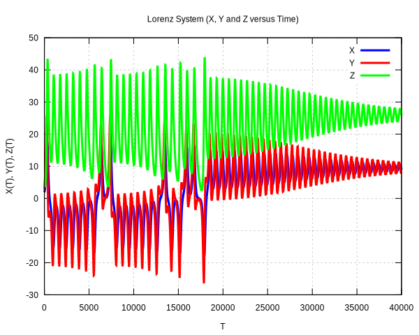

libchaos: randomization, hashing and statistical analysis¶
Libchaos is a computing library written in C++ language to help with the development of software for scientific research. The library tries to be as general as possible, modern and easy-to-use.
Project implements wide range of chaos machines, which presents the idea to create a universal scheme with modular design and customizable parameters, that can be applied where randomness and sensitiveness is needed.
 |
 |
A summary of core features:
- Chaos machines
- Pseudo-random number generators
- Probability distributions
- Randomness extractors
- Statistical functions
- Gnuplot utilities
—
Getting Help
If you have questions about the library, please be sure to check out the API documentation. If you still have questions, reach out to us on IRC or post a question on StackOverflow (with the libchaos tag).
Reporting Bugs
Please open a GitHub Issue and include as much information as possible. If possible, provide sample code that illustrates the problem you’re seeing. If you’re seeing a bug only on a specific repository, please provide a link to it if possible.
We ask that you not open a GitHub Issue for help, only for bug reports.
User’s Guide¶
Warning
This project is at an early stage of development, every piece of hardware and software is in alpha version, if you are an adventurer this is a place for you!
The list of core features is not ready. You need to dive into source code to find out what is working properly. If you have some ideas, feel free to contribute.
This part of the documentation, which is mostly prose, begins with some background information about libchaos, then focuses on step-by-step instructions for working with libchaos.